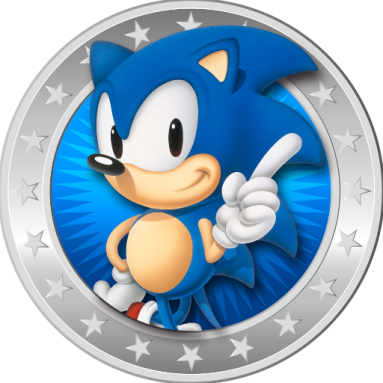
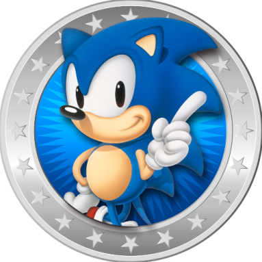
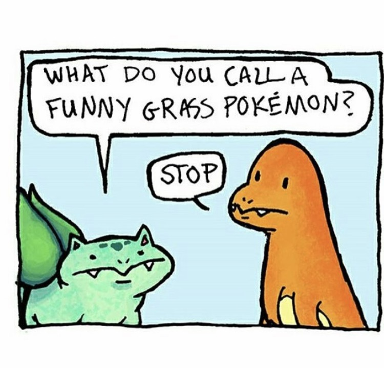
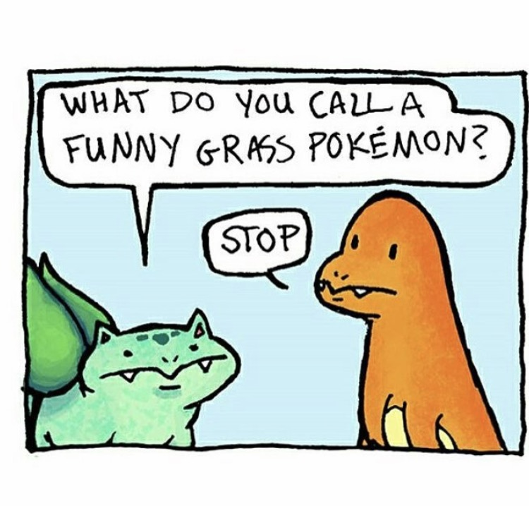
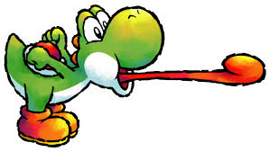
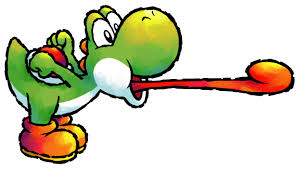
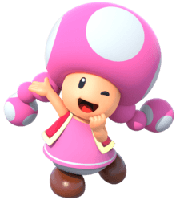
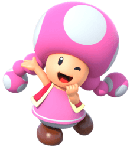

About Us
Donovan Cummins
An IT major and of junior status, Donovan is very creative and uses his knowledge on the topics we covered in class to the best of his ability.

Zeyad Faeq
Zeyad is a junior, his hobbies include Scale Modeling and he loves music as well.


Kyndall Shaw
Kyndall is a senior also majoring in IT, her bobbies include reading, drawing, traveling, exercising, and working. Her future goals are to be CTO, and eventually start her own cyber security organization.


Bart Ruc
Bart is an IT student of sophomore status, in his spare timem he enjoys work, sailing, and camping.


Taylor Hampton
Taylor is a junior and is an outgoing person, like her groupmates, she is an IT major.

